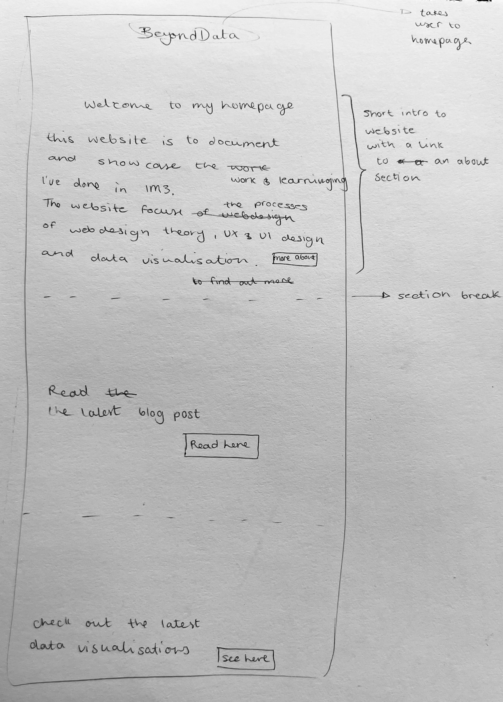
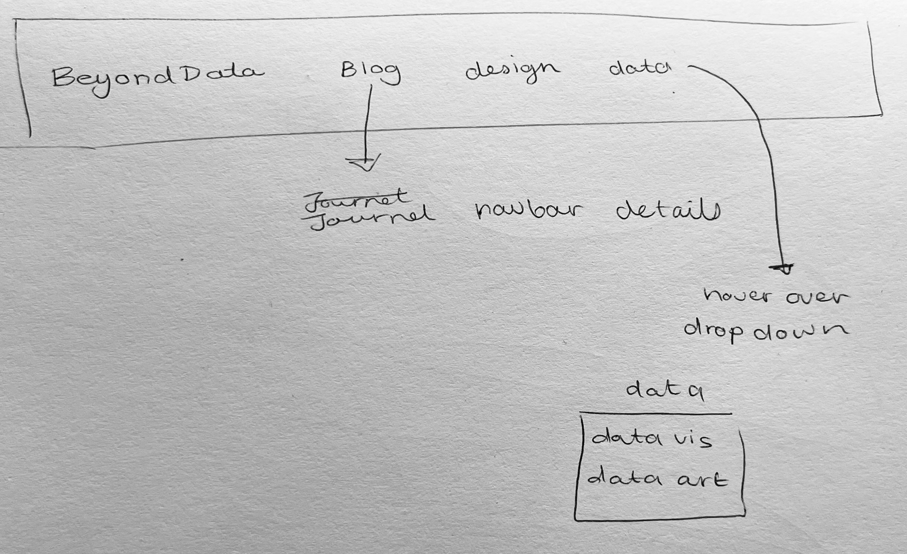
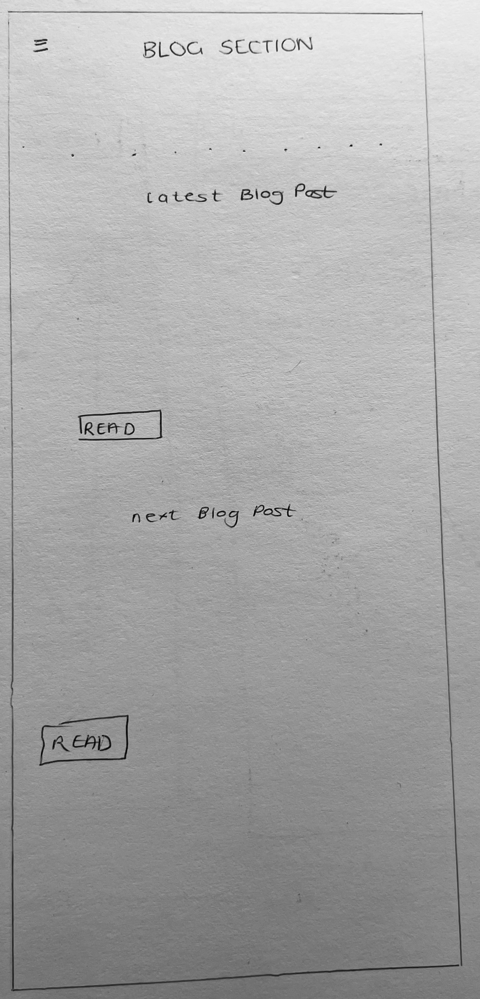
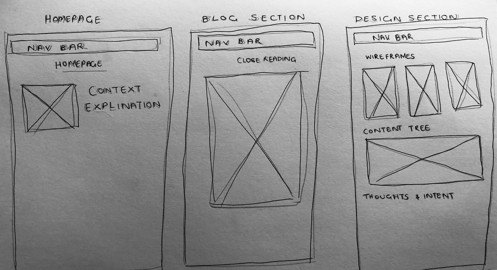
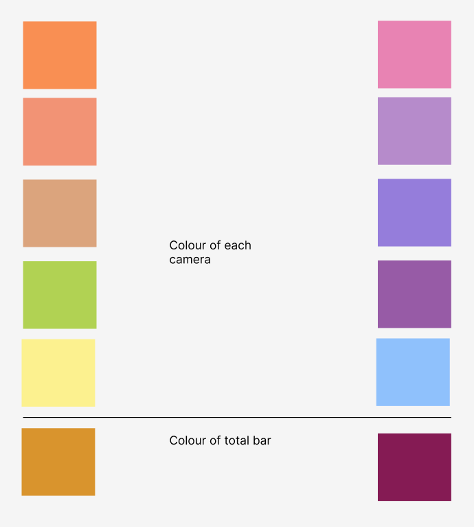

Wireframes

- 
- 
- 
- 
rough wireframes
I wanted to create a fake company to help guide the site and give me a bit more direction. The website's aesthetic is largely inspired by the SpaceX as well as Starlink. I want the site to have a minamalist look that mostly uses a black and white colour pallet that incorporates images from NASA's photo libraries.

An interactive bar graph that shows the number of images captured by each of the 3 cameras that the Mars rovers have in common. On the side there are three buttons that switch between the 3 rovers.
This visualisation will use the Mars Rover Photos API
This word cloud displays the frequency that a key word is used in the APOD
This Visualisation uses the APOD API
Using the Mars rover API to display the number of photos taken by Opportunity on the day it landed and on the day it stopped operating.
the colour pallet above displays the contrast between the rovers firt and last sol.